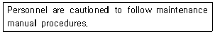
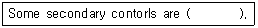
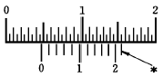
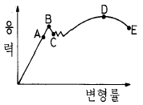

항공기체정비기능사 (2002-04-07 기출문제)
1과목: 비행원리
1. 대기를 이루고 있는 기체중에서 부피비로 보았을 때 두번째로 많은 것은?
- 이산화탄소
- 아르곤
- 산소
- 질소
(정답률: 85%)

2. 수평비행을 하던 비행기가 연직 상방향으로 관성력을 받을 때 비행기의 하중배수를 옳게 표현한 식은?
- n= 비행기무게/관성력
- n=1+ 관성력/비행기무게
- n= 비행기무게/(비행기무게 - 관성력)
- n=1+ 비행기무게/관성력
(정답률: 64%)
3. 큰날개와 꼬리날개에 의한 무게중심 주위의 키놀이모멘트 관계식은? (단, MC.G : 무게중심 주위의 키놀이 모멘트, MC.G WING : 큰날개에 의한 키놀이 모멘트, MC.G TAIL : 꼬리날개에 의한 키놀이 모멘트)
- MC.G = MC.G WING - MC.G TAIL
- MC.G = MC.G WING + MC.G TAIL
- MC.G = MC.G WING x MC.G TAIL
- MC.G = MC.G WING ÷ MC.G TAIL
(정답률: 45%)
4. 헬리콥터의 지면효과가 있을 때 일어나는 현상중에서 잘못된 것은?
- 회전날개 깃의 받음각이 증가하게 된다.
- 항력의 크기가 증가한다.
- 양력의 크기가 증가한다.
- 같은 기관의 출력으로 많은 무게를 지탱할 수 있다.
(정답률: 59%)
5. A, B, C 3대의 비행기가 각각 1000m, 5000m, 10000m의 고도에서 동일한 속도로 비행하고 있다. 각 비행기의 마하계가 지시하는 마하수를 비교한 것으로 옳은 것은?
- A < B < C
- A > B > C
- A > C > B
- A = B = C
(정답률: 82%)
6. 등가대기속도(Equivalent Airspeed)에 대한 정의로 가장 올바른 것은?(오류 신고가 접수된 문제입니다. 반드시 정답과 해설을 확인하시기 바랍니다.)
- 진대기속도를 해면고도의 압력으로 보정한 속도
- 진대기속도를 해면고도의 밀도로 보정한 속도
- 지시대기속도를 해면고도의 온도로 보정한 속도
- 지시대기속도를 해면고도의 압력으로 보정한 속도
(정답률: 37%)
7. 고속비행시에 도움날개나 방향키의 변위각을 자동적으로 제한하여 옆놀이 커플링 현상을 방지하기 위해 부착하는 것은?
- 벤트럴 핀(Ventral fin)
- 와류고리(Vortex ring)
- 실속 스트립(stall strip)
- 도살 핀(dorsal fin)
(정답률: 45%)
8. 헬리콥터의 공기역학에서 자주 사용되는 마력하중(horse power loading)을 구하는 식은?
- 마력하중 =W(π HP)
- 마력하중 =(π HP)/W
- 마력하중 =HP/W
- 마력하중 =W/HP
(정답률: 49%)
9. 윙렛(winglets)에 대한 설명으로 잘못된 것은?
- 날개끝에서의 와류발생을 작게한다.
- 일반적으로 고속 비행기에 많이 사용한다.
- 항력을 감소 시킨다.
- 스핀시 회복력을 증가 시킨다.
(정답률: 41%)
10. 흐름의 떨어짐 현상(박리; Separation)에 대한 내용으로 가장 올바른 것은?
- 난류 경계층의 경우에만 발생한다.
- 층류 경계층의 경우에만 발생한다.
- 아음속 항공기의 난류 경계층에서만 발생한다.
- 난류 경계층보다 층류 경계층에서 쉽게 일어난다.
(정답률: 47%)
11. 공중측량, 사진촬영, 광고, 농업용 등에 사용하는 상업용 비행기는 어디에 속하는가?
- 자가용 비행기
- 항공운송 사업용 비행기
- 사용 사업용 비행기
- 부정기 운송 사업용 비행기
(정답률: 81%)
12. 날개의 길이가 10m 이고 면적이 20 m2일 때 가로세로비는 얼마인가?
- 1
- 5
- 10
- 20
(정답률: 65%)
13. 항력의 종류에서 유해항력(parasite drag)과 관계 없는 것은?
- 압력항력
- 마찰항력
- 유도항력
- 형상항력
(정답률: 67%)
14. 날개의 최대두께 위치를 40‾50 %에 위치하여 설계양력 계수 부근에서 항력계수가 작아지도록 하고 받음각이 작을 때 앞부분의 흐름이 층류를 유지하도록 한 날개골은 무엇인가?
- 층류 날개골
- 피키날개골
- 초임계날개골
- 아음속 날개골
(정답률: 73%)
15. 실용적으로 제한된 곡예비행만 적합한 항공기의 감항류는?
- T류
- A류
- N류
- U류
(정답률: 64%)
16. 기관의 저장시 습도지시계의 색이 무슨색일 때 습기에 가장 안전한 상태인가?
- 흰색
- 검정색
- 핑크색
- 청색
(정답률: 65%)
17. 항공기 운항중에 분실 또는 멸실된 부품에 대하여 정시성 확보를 위한 목적으로 운항을 하기 위해 이용되는 것은?
- 최소 구비 장비 목록
- 정비 작업 목록
- 부족 허용 부품 목록
- 정비 지시 목록
(정답률: 46%)
18. 노화 표본검사(age sampling)에 의하여 정비가 행하여 지는 것은?
- 신뢰성정비
- 시한성정비
- 부품 기술정보
- A점검
(정답률: 34%)
19. 정비계획 부서는 어느 업무에 속하는가?
- 정비관리업무
- 품질관리업무
- 보급관리업무
- 기술관리업무
(정답률: 82%)
20. 구멍의 안지름이나 홈의 너비 등을 측정할 때 사용하는 측정 보조장비는?
- Telescoping Gage
- Thickness Gage
- Feeler Gage
- Pitch Gage
(정답률: 44%)
2과목: 항공기정비
21. Bolt head에 R의 기호가 새겨졌다. 무엇을 의미하는가?
- 정밀공차 볼트
- 내식성 볼트
- 알루미늄합금 볼트
- 열처리 볼트
(정답률: 64%)
22. 리벳(RIVET)의 부품번호 AN 430 A 4-5 에서 끝의 숫자 5는 무엇을 나타내는가?
- RIVET의 직경이 5/32인치
- RIVET의 직경이 5/16인치
- RIVET의 길이가 5/32인치
- RIVET의 길이가 5/16인치
(정답률: 49%)
23. 압력계기의 작동시험 장비의 명칭은?
- 다코웰 시험기
- 데드웨이트 시험기
- 그롤러 시험기
- 제티칼 시험기
(정답률: 59%)
24. 자분탐상검사에 관한 설명 내용으로 틀린 것은?
- 결함깊이를 측정하려면 90° 각도의 자력선을 유도 한다.
- 자장의 방향은 일반적으로 오른손법칙을 따른다.
- 탈자방법에는 직류탈자와 교류탈자가 있다.
- 건식의 자분을 이용할 때는 시험면을 건조시킨다.
(정답률: 51%)
25. 사고방지에 관한 내용으로 틀린 것은?
- 사고방지를 위해서는 작업장 주위환경을 항상 깨끗이 정리정돈하여 사고의 잠재요인을 없애야 한다.
- 작업시에는 반드시 절차에 따른 보호장구를 착용해야 한다.
- 사고원인의 대부분은 불가항력(자연현상)으로 일어나는 것이다.
- 안전이라 함은 사람과 물건에 대하여 발생할 수 있는 위험을 제거하여 편안하고 온전하게 하는 것이다.
(정답률: 80%)
26. 전기화재 및 유류화재에 사용해서는 안되는 소화기는?
- 압축된 물소화기
- 거품 소화기
- 탄산가스 소화기
- 건조화학 분말소화기
(정답률: 80%)
27. 귀마개는 무엇으로 세척하는 것이 좋은가?
- 비눗물
- 알콜
- 솔벤트
- 화학세제
(정답률: 73%)
28. 헬리콥터의 지상취급에 속하지 않는 것은?
- 도색작업
- 견인작업
- 계류작업
- 잭작업
(정답률: 63%)
29. 작업중에 반드시 접지를 하지 않아도 되는 것은?
- 연료의 급유 작업
- 연료의 배유 작업
- 항공기 정비 작업
- 항공기 시운전
(정답률: 83%)
30. 다음 영문의 내용으로 가장 올바른 것은?

- 정비를 할 때는 상사의 자문을 구한다.
- 정비 교범절차에 따라 주의를 해야 한다.
- 정비 교범절차에 꼭 따를 필요는 없다.
- 정비를 할 때는 사람을 주의해야 한다.
(정답률: 89%)
31. 다음 ( ) 안에 해당되지 않는 것은?

- spoilers
- ailerons
- leading edge device(slats)
- control trim systems
(정답률: 63%)
32. 최소 측정값이 1/50 mm인 버니어 캘리퍼스에서 다음 그림의 측정값은 얼마인가?

- 4.52
- 4.70
- 4.72
- 4.75
(정답률: 68%)
33. 와전류 검사의 특성을 설명한 내용으로 틀린 것은?
- 검사의 자동화가 가능하다.
- 비전도성 물체에는 적용할 수 없다.
- 형상이 단순한 것이 아니면 적용할 수 없다.
- 표면 아래의 깊은 위치에 있는 결함의 검출을 쉽게 할 수 있다.
(정답률: 44%)
34. 나사산에 기름이나 그리스가 묻어있을 경우 걸리는 조임을 무엇이라 하는가?
- 과소 토큐
- 정확한 토큐
- 드라이 토큐
- 과다 토큐
(정답률: 78%)
35. 복선식 안전 결선 작업에서 고정 작업을 해야할 부품이 4∼6in(10.2∼15.2㎝)의 넓은 간격으로 떨어져 있을 때, 연속적으로 고정할 수 있는 부품의 수는 최대 몇 개로 제한되어 있는가?
- 2개
- 3개
- 4개
- 5개
(정답률: 81%)
36. 수직꼬리날개부의 방향키를 변위시켜 얻어지는 운동을 무슨 운동이라 하는가?
- 피칭(pitching)
- 로울링(Rolling)
- 요우잉(Yawing)
- 밸런싱(Balancing)
(정답률: 62%)
37. 주 조종면 뒷쪽에 붙어있는 작은 날개로서 비행중에 발생하는 불균형상태를 탭을 변위시킴으로써 정상비행을 하게 하는 장치는 무엇인가?
- 서어보탭
- 트림탭
- 밸런스탭
- 스프링탭
(정답률: 35%)
38. 자동조종장치(Auto Pilot System)의 일차적인 목적은?
- 장시간의 비행중 조종사의 힘을 덜어주기 위하여
- 미리 정해진 진행방향을 유지하기 위하여
- 악기상중 정확한 진행방향과 고도를 유지하기 위하여
- 착륙하기 위한 정밀계기를 보조하기 위하여
(정답률: 74%)
39. 항공기의 착륙장치 종류에 속하지 않는 것은?
- 타이어 바퀴형
- 테일형
- 스키형
- 플로오트형
(정답률: 59%)
40. 타이어(tire)가 과 팽창하면 다음 중에서 손상의 원인이 될 수 있는 것은?
- 허브 프림(hub frim)
- 휠 플렌지(wheel flange)
- 백 프레이트(back plate)
- 브레이크(brakes)
(정답률: 57%)
3과목: 항공기체
41. 열처리 방법중 알루미늄 합금에 이용되는 열처리방법은?
- 담금질(Quenching)
- 노오멀라이징(Normalizing)
- 풀림(Annealing)
- 뜨임(Tempering)
(정답률: 26%)
42. 올레오 스트러트(oleo strut)가 밑바닥에 가라 앉았을 때 예상되는 가장 큰 원인은?
- 공기압이 낮기 때문이다.
- 공기압이 높기 때문이다.
- 공기압이 충분하기 때문이다.
- 작동유가 과도하기 때문이다.
(정답률: 50%)
43. 헬리콥터 동체의 구조형식인 모노코크형 구조에 속하지 않는 부재는?
- 링
- 정형재
- 벌크헤드
- 세로대
(정답률: 44%)
44. 그림과 같은 응력-변형률 선도에서, 보통 기체역학적으로 인장강도라고 생각되는 점은?

- A
- B
- C
- D
(정답률: 47%)
45. 주 회전날개의 허브부분에 속하지 않는 구성부품은?
- 침하방지장치
- 플래핑방지장치
- 회전경사판
- 피치조종로드
(정답률: 30%)
46. 헬리콥터의 저주파수 진동에 속하는 사항중 주회전날개의 헤드나 회전날개 깃이 불평형상태가 되었을 때 발생하는 것은?
- 2/3회 진동
- 횡전진동
- 1회 진동
- 꼬리진동
(정답률: 39%)
47. 날개 뿌리부분에 있는 필렛(Fillet)의 주 역할은?
- 날개뿌리 부분에 과도한 응력이 작용하는 것을 방지하기 위하여
- 응력집중으로 인해 생기는 피로를 방지하기 위하여
- 실속 속도부근에서 양력 손실을 방지하기 위하여
- 이상한 비행특성이나 꼬리날개 부분의 이상한 비행 진동을 막기 위하여
(정답률: 32%)
48. 충격을 받은 날개 외피 밑의 스트링거(Stringer)를 수리하는데 대한 설명으로 가장 적합한 것은?
- 수리할 수 없다.
- 수리는 가능하나 강도면에서 위험하다.
- 수리는 가능하나 열역학적인 면에서 위험하다.
- 날개 앞전으로부터 6인치 이상의 수리는 불가능하다.
(정답률: 52%)
49. 복합재료에 사용되는 모재는 어느 것인가?
- 유리섬유
- 탄소섬유
- 아라미드
- 열가소성 수지
(정답률: 34%)
50. 항공기에 사용하는 시일(Seal) 중 O-ring의 기능 설명으로 틀린 것은?
- O-ring의 두께는 홈의 깊이보다 10%정도 작아야 한다.
- O-ring은 압축되지 않으면 누설의 원인이 된다.
- 피스톤이 움직이면 O-ring은 감기거나 또는 미끄러 진다.
- 작동유, 오일, 연료, 공기등의 누설(Leak)을 방지한다.
(정답률: 43%)
51. 허니컴 샌드위치 구조(Honeycomb Sandwitch Structure)의 설명 중 틀린 것은?
- 표면이 평평하다.
- 충격흡수가 우수하다.
- 집중하중에 강하다.
- 단열성이 좋다.
(정답률: 60%)
52. 방화벽의 재료로 가장 적당한 것은?
- 오스테나이트계 스테인레스강
- 알루미늄 합금
- 마그네슘강
- 탄소강
(정답률: 46%)
53. 알루미늄 성질을 잘못 설명한 것은?
- 바닷물에 내식성이 강하다.
- 표면에 산화피막을 만든다.
- 전기 및 열의 양도체이다.
- 암모니아에 대한 내식성이 크다.
(정답률: 46%)
54. 충격에 잘 견디며, 찢어지거나 파괴가 되지 않는 금속의 성질을 무엇이라고 하는가?
- 전성
- 취성
- 인성
- 연성
(정답률: 52%)
55. 기둥의 좌굴(Buckling)현상에 대해서 틀리게 설명한 것은?
- 축 방향으로 압축력을 받는 부재에서 주로 발생한다.
- 단면에 비하여 길이가 비교적 짧은 부재에서 주로 발생한다.
- 좌굴응력은 재료의 압축강도보다 훨씬 작은 값이다.
- 세장비(Slenderness ratio)가 큰 기둥에서 주로 발생한다.
(정답률: 51%)
56. 비행중 항공기의 날개(Wing)에 걸리는 응력에 관해서 가장 올바르게 설명한 것은?
- 윗면에는 인장응력이 생기고 아랫면에는 압축응력이 생긴다.
- 윗면에는 압축응력이 생기고 아랫면에는 인장응력이 생긴다.
- 윗면과 아랫면 모두다 압축응력이 생긴다.
- 윗면과 아랫면 모두다 인장응력이 생긴다.
(정답률: 69%)
57. 헬리콥터 회전 날개가 회전하면서 날개 깃이 위로 올라간 현상을 뭐라고 하는가?
- 처짐
- 코닝
- 궤도
- 진동
(정답률: 79%)
58. 지름이 5㎝인 원형 단면인 봉에 8000 N 의 인장하중이 작용시, 단면에 작용하는 응력을 구하면?
- 401.4(N/㎝2)
- 4⑤.4(N/㎝2)
- 403.4(N/㎝2)
- 407.4(N/㎝2)
(정답률: 29%)
59. 실속 속도가 160㎞/h인 비행기를 320㎞/h의 속도로 수평 비행을 하다가 갑자기 조종간을 당겨 최대 받음각의 자세를 취하여 CLmax인 상태로 하였다. 이때, 하중 배수는 얼마인가?
- 1/2
- 1/4
- 2
- 4
(정답률: 29%)
60. 외력을 받는 구조물이 그 지지점에서 반력이 생겨 평형을 유지한다면, 이 계에 작용하는 평형 방정식에서 포함되지 않는 항은? (단, 2차원 평면도로 가정함.)
- 모든 수평 분력의 합은 0 이다.
- 모든 수직 분력의 합은 0 이다.
- 임의의 점에 대한 모멘트의 합은 0 이다.
- 모든 인장 및 압축의 합은 0 이다.
(정답률: 37%)